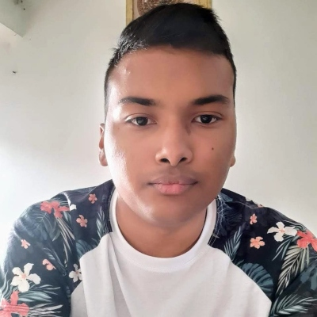

ANDERSON DAVID PATIÑO CAICEDO
Estudiante de ingeniería de sistemas en la Universidad Francisco de Paula Santander de la ciudad de Cúcuta, aunque actualmente no me encuentre en la ciudad, en lo posible espero poder graduarme en esta universidad. Me considero una persona muy amigable, como el líder del grupo, pero más que todo el que se preocupa más por los demás que por sí mismo. Mis pasatiempos favoritos son oir música, ver directos en Twitch, jugar basket y hablar con mis amigos por Discord